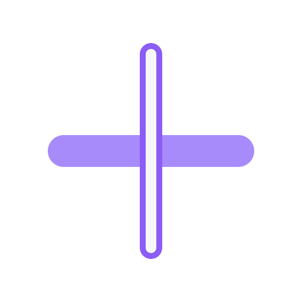

Lyriq
Reader
Midnight Language
Aurora Days
⌕
⌖
—
□
×
DUAL
EN → 日本語
ROMAJI
♡
•••
The city hums beneath the rain
Every window holds a different name
I keep your voice between the stations
駅と駅のあいだに、君の声を残してる
Eki to eki no aida ni, kimi no koe o nokoshiteru
Like a signal only I can hear
And the night keeps moving without us
02:18
LIVE +12ms
↶
◀
Ⅱ
▶
↷
Aᴀ
⌖
▭
Ctrl+K commands · F11 immersive · Esc close